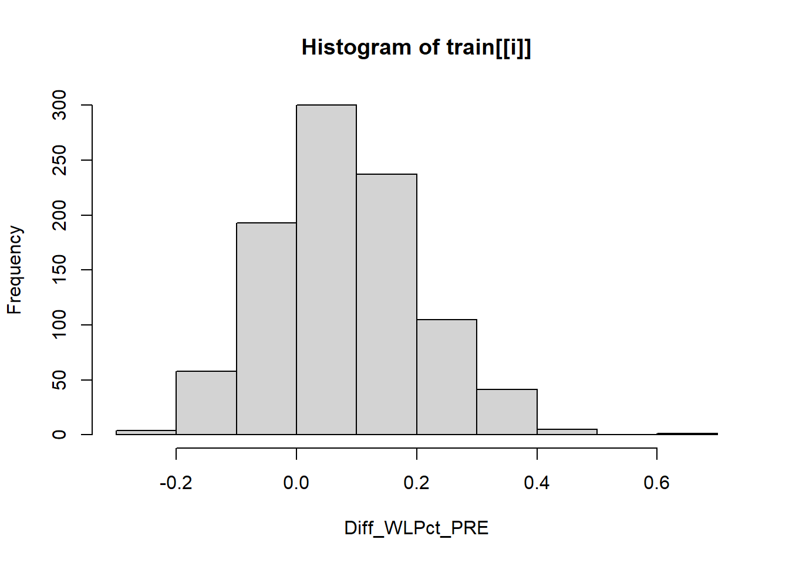
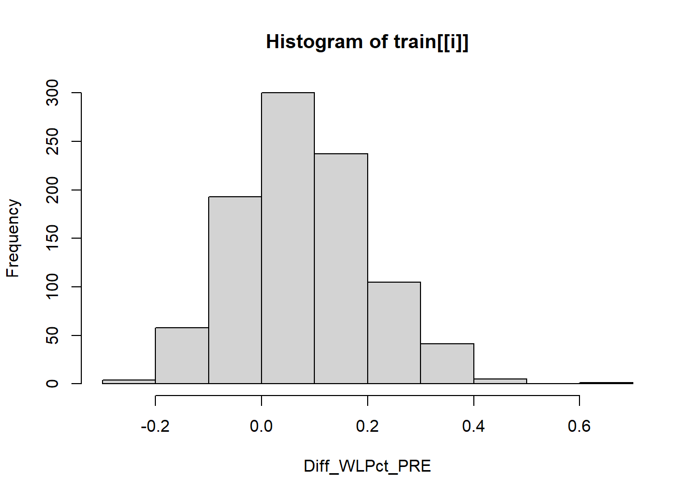

2024 Men’s March Madness NCAA Basketball Tournament Matchup Predictions
2024-07-04
Chapter 1 March Madness Matchup Predictions
1.1 Introduction
Objective
Predict winners of the 2024 Men’s NCAA March Madness tournament matchups through various machine learning models (logistic regression, random forest, extreme gradient boosting (XGBoost), support vector machines (SVM), Naive Bayes, and multivariate adaptive regression splines (MARS))
The MARS model performed the best on the test dataset and finished with an ESPN score of 870 (69% accuracy) and 3/8 Elite 8 teams correct for the 2024 tournament.
The XGBoost model performed the next best on the test dataset and finished with an ESPN score of 360 (12.9% accuracy) and 1/8 Elite 8 teams correct for the 2024 tournament.
The XGBoost model heavily favored upsets and while it only had 1 of the 8 Elite 8 teams, it did correctly pick NC State to be there. Please see the Results and Recommendations section for a more detailed analysis of these model performances.
Background
The NCAA March Madness tournament is an annual basketball tournament held every March. 64 teams compete against each other in a single game elimination, bracket style tournament. Individuals can build predictions on who they think will win for each possible matchup and how the bracket will turn out for each round of the March Madness tournament (Round of 64, Round of 32, Sweet 16, Elite 8, Final 4, and Championship). The odds of a perfect bracket are 1 in 9.2 quintillion, if you chose winners at random.
Consequentially, I was interested in using data science skills and machine learning models to help me in predicting the winners of these brackets. While I have no expectations of creating a perfect bracket, the statistics on team performance throughout the year provide data backed decisions on who will win certain matchups in the NCAA tournament.
How are points calculated for March Madness brackets in the ESPN Tournament Challenge?
Round of 64 = 10 points per correct pick (32 games)
Round of 32 = 20 points per correct pick (16 games)
Sweet 16 = 40 points per correct pick (8 games)
Elite 8 = 80 points per correct pick (4 games)
Final 4 = 160 points per correct pick (2 games)
Championship = 320 points per correct pick (1 game)
The maximum possible points you can earn for a perfect bracket is 1920 points. In general, I would say most of my brackets in the past have scored around 400 - 900 points. Winning a large bracket pool usually will take a score of least 1000 points (picking the champion or some of the final 4 teams), but obviously depends on how the pool plays out each year.
It’s extremely important to have your Elite 8 and Final 4 teams still alive after the first two rounds of the tournament because that keeps you in the running for the maximum points possible. The best bracket I have ever created was for the 2017 March Madness tournament, where I picked UNC to win the whole tournament and (luckily) chose South Carolina to be in the Final 4. This bracket scored a 1630.
Data
The data collected was from the 2008 to 2023 March Madness tournaments on each game outcome. There are 63 games every tournaments, resulting in 944 rows of all tournament matchups in this time frame (1 game was cancelled in 2021 due to COVID-19). I chose to start in 2008 due to availability of the data as well as I wanted to use data that relevantly reflected the style of play of today’s game.
This data included:
Year
TeamA and TeamB
Tournament Seed
Final score of the matchup
Individual team data was web-scraped from TeamRankings.com, Bart Torvik, and SportsReference.com (College Basketball). Please check the references section for a full list of the data sources, as well as web-scraping code.
This data included:
Team performance metrics and averages
- Field Goal %
- 3-point %
- Free Throw %
- Steals
- Assists
- Blocks
- Turnovers
- Personal fouls
- Total rebounds
- Offensive rebounds
- Opponent points per game (PPG)
- Opponent turnovers
- Win/Loss %
- Effective FG%
- Average Margin of Victory (MOV)
- Win/Loss % (past 10 games)
Advanced metrics
- Offensive/Defensive efficiency (unadjusted)
- Pace of play
- Extra scoring chances
- Ratings percentage index (RPI)
Bart Torvik formulas
- Offensive/Defensive efficiency (adjusted)
- Pace of play (adjusted)
- Wins above bubble (WAB - how many games a team won relative to a bubble-quality team)
- BARTHAG (overall team evaluation metric)
Feature Engineered Variables I created
- Pythagorean Win Expectation
- Luck
- Pace (adjusted) / team efficiency (adjusted)
- Opponent turnovers / team turnovers
1.2 Methodology
Here are the libraries I used to create this project:
library(tidyverse)
library(bookdown)
library(ggplot2)
library(car)
library(corrplot)
library(Hmisc)
library(readxl)
library(caret)
library(glmnet)
library(nortest)
library(MASS)
library(forcats)
library(gmodels)
library(vcdExtra)
library(mgcv)
library(DescTools)
library(ROCit)
library(randomForest)
library(xgboost)
library(smbinning)
library(Ckmeans.1d.dp)
library(e1071)
library(klaR)
library(earth)
library(bookdown)
library(reshape2)Next, I load in the dataset. Please see https://github.com/tylerfarr5/march-madness for all associated data files. I chose to start by original dataset at 2008 because certain variables that I wanted to use in the model were not available until the start of the 2008 season. Additionally, one could make an argument that the game of college basketball in 2024 is not the same as it was in 2000, so the 2008 data will at least be more relevant to the game today.
mm_data <- read_excel("march_madness.xlsx", sheet = 2)
#only want 2008-2023
mm_data <- mm_data %>%
dplyr::filter(!(Year %in% 2000:2007))A quick note about the data - I chose to compile many different data sources into one file, so I found it easier to web-scrape and compile everything in Microsoft Excel first, before reading that file R. A quick snapshot of what the data frame looked like is provided below:
## # A tibble: 6 × 44
## Year TeamA TeamB A_Seed B_Seed A_Score B_Score MOV Winner_A Round Diff_FGPct_PRE
## <dbl> <chr> <chr> <dbl> <dbl> <dbl> <dbl> <dbl> <dbl> <chr> <dbl>
## 1 2008 UNC Moun… 1 16 113 74 39 1 Roun… 0.0390
## 2 2008 Indi… Arka… 8 9 72 86 -14 0 Roun… -0.00300
## 3 2008 Notr… Geor… 5 12 68 50 18 1 Roun… -0.0100
## 4 2008 Wash… Wint… 4 13 71 40 31 1 Roun… 0.0380
## 5 2008 Okla… St. … 6 11 72 64 8 1 Roun… -0.0350
## 6 2008 Loui… Bois… 3 14 79 61 18 1 Roun… -0.049
## # ℹ 33 more variables: Diff_3ptPct_PRE <dbl>, Diff_FTPct_PRE <dbl>,
## # Diff_TRB_PRE <dbl>, Diff_AST_PRE <dbl>, Diff_STL_PRE <dbl>, Diff_BLK_PRE <dbl>,
## # Diff_TO_PRE <dbl>, Diff_PF_PRE <dbl>, Diff_PPG_PRE <dbl>,
## # Diff_OppFGPct_PRE <dbl>, Diff_OppPPG_PRE <dbl>, Diff_UnadjOffEff_PRE <dbl>,
## # Diff_UnadjDefEff_PRE <dbl>, Diff_WLPct_PRE <dbl>, Diff_Pace_PRE <dbl>,
## # Diff_eFGPct_PRE <dbl>, Diff_OReb_PRE <dbl>, Diff_AvgMOV_PRE <dbl>,
## # Diff_ExtraScoringChancesPG_PRE <dbl>, Diff_PythagoreanExp_PRE <dbl>, …Matchups
Here are some of the rules in place on matchup data in the dataset:
The higher seed will always be TeamA and the lower seed will be TeamB
If a matchup has two seeds that are the same number, then team with higher points per game will be TeamA
I differenced each teams’ season statistics to evaluate how good or bad a team is relative to their opponent, and then used the differenced values as predictors in the model. The difference was TeamA minus TeamB.
Since a final score was provided from each game, that left an opportunity for a continuous target variable of the margin of victory (MOV), or a binary target variable for whether or not TeamA won the game. I chose to model the binary target variable for whether or not TeamA won.
Pre and Post-Tourney Metrics
I had originally pulled my data from SportsReference, however I realized that these team statistics reflect post-NCAA tournament numbers. In order to build and evaluate the model on data that is most reflective of team performance, I needed to get data that was pre-tournament. For example, if Clemson were to get hot and start making 3-point shots throughout the March Madness tournament, that would likely drive up their season 3-point shooting percentage and is different from where they stood before the tournament.
Before fully committing to using pre-tournament numbers, I performed paired t-tests (Wilcoxon signed rank test) and tests of normality (Shapiro-Wilks test) to evaluate pre and post tournament performance on a variety of team metrics. For some metrics, like a team’s median field goal percentage, did not have a statistically significant different before and after the tournament. However, metrics like total rebounds, win-loss percentage, turnovers, and many more were statistically different. These results led me to conclude that I needed to use pre-tournament numbers. An example of how I did this is provided below.
#Team FG% - no statistical difference
shapiro.test(with(mm_data, mm_data$Diff_FGPct - mm_data$Diff_FGPct_PRE))
wilcox.test(mm_data$Diff_FGPct, mm_data$Diff_FGPct_PRE, paired = TRUE, alternative = 'two.sided')
#Team Total Rebounds - statistically significant difference between pre and post-tournament numbers
shapiro.test(with(mm_data, mm_data$Diff_TRB - mm_data$Diff_TRB_PRE))
wilcox.test(mm_data$Diff_TRB, mm_data$Diff_TRB_PRE, paired = TRUE, alternative = 'two.sided')There was no missing data in the dataset.
Before exploring the data, I did a train/test split of the 2008 to 2023 tournaments data. I chose to use the 2023 tournament as my test dataset and evaluated how well the data built on 2008 to 2022 performed on the 2023 bracket. The training set is 881 rows and the testing set is 63 rows.
train <- mm_data[mm_data$Year != 2023,] #2000 - 2022 tournaments
valid <- mm_data[mm_data$Year == 2023,] #2023 tournament
train <- as.data.frame(train) #this helps SMBinning work
valid <- as.data.frame(valid) #this helps SMBinning work## [1] "Train Data (2008-2022 brackets) - Rows: 881"## [1] "Test Data (2023 bracket) - Rows: 63"Model Evaluation
I chose to evaluate my models using area under the receiver operating characteristic (AUROC) curve, which balances sensitivity and specificity. However, since the best bracket is typically the one that scores the most points in the ESPN Tournament Challenge, I also evaluated how well my model scored in terms of ESPN points.
To do this, I generated every possible matchup for the 2023 tournament, so I could evaluate what the model chose in later rounds where it may have picked the wrong team to win in earlier rounds of the tournament. Here, I read in that dataset:
## # A tibble: 6 × 37
## Year TeamA TeamB A_Seed B_Seed Diff_FGPct_PRE Diff_3ptPct_PRE Diff_FTPct_PRE
## <dbl> <chr> <chr> <dbl> <dbl> <dbl> <dbl> <dbl>
## 1 2023 Alabama Maryland 1 8 -0.00300 0.00800 -0.0130
## 2 2023 Alabama San Dieg… 1 5 0.00500 -0.00600 -0.0100
## 3 2023 Alabama Virginia 1 4 -0.00300 -0.0150 0.0250
## 4 2023 Alabama Creighton 1 6 -0.0210 -0.0220 -0.0410
## 5 2023 Alabama Baylor 1 3 -0.00100 -0.0340 -0.0230
## 6 2023 Alabama Missouri 1 7 -0.0270 -0.0230 -0.0320
## # ℹ 29 more variables: Diff_TRB_PRE <dbl>, Diff_AST_PRE <dbl>, Diff_STL_PRE <dbl>,
## # Diff_BLK_PRE <dbl>, Diff_TO_PRE <dbl>, Diff_PF_PRE <dbl>, Diff_PPG_PRE <dbl>,
## # Diff_OppFGPct_PRE <dbl>, Diff_OppPPG_PRE <dbl>, Diff_UnadjOffEff_PRE <dbl>,
## # Diff_UnadjDefEff_PRE <dbl>, Diff_WLPct_PRE <dbl>, Diff_Pace_PRE <dbl>,
## # Diff_eFGPct_PRE <dbl>, Diff_OReb_PRE <dbl>, Diff_AvgMOV_PRE <dbl>,
## # Diff_ExtraScoringChancesPG_PRE <dbl>, Diff_PythagoreanExp_PRE <dbl>,
## # Diff_Luck_PRE <dbl>, Diff_WLPast10_PRE <dbl>, Diff_AdjO_PRE <dbl>, …1.3 Exploratory Data Analysis (EDA)
Here, I dive a little deeper into various relationships between the variables in the training data before I build a model.
We start by looking at a correlation matrix of the differenced variables in the model. For generic team basketball metrics, I abbreviated them accordingly. As expected, we see strong correlations between teams offensive efficiencies and their points per game, pace of play, or average margin of victory. One interesting finding was a strong negative correlation between a team’s defensive efficiency and their pythagorean expectation.
res <- cor(train[c(11:44)])
colnames(res) <- c("FG% ", "3pt% ", "FT% ", "TRB ", "AST ", "STL ", "BLK ", "TO ", "PF ", "PPG ", "OppFG% ", "OppPPG ", "Unadjusted Off Efficiency ", "Unadjusted Def Efficiency ", "WL% ", "Pace ", "eFG% ", "OReb ", "AvgMOV ", "Extra Scoring ChancesPG ", "Pythagorean Expectation ", "Luck ", "RPI ", "RPI Strength of Schedule ", "WL% Past 10 ", "Adjusted Off Efficiency ", "Adjusted Def Efficiency ", "Adjusted Efficiency Margin ", "BARTHAG ", "Adjusted Tempo ", "Wins Above Bubble ", "OppTO ", "Adjusted Tempo/Adjusted Efficiency Margin Ratio ", "OppTO/TO Ratio ")
rownames(res) <- c("FG% ", "3pt% ", "FT% ", "TRB ", "AST ", "STL ", "BLK ", "TO ", "PF ", "PPG ", "OppFG% ", "OppPPG ", "Unadjusted Off Efficiency ", "Unadjusted Def Efficiency ", "WL% ", "Pace ", "eFG% ", "OReb ", "AvgMOV ", "Extra Scoring ChancesPG ", "Pythagorean Expectation ", "Luck ", "RPI ", "RPI Strength of Schedule ", "WL% Past 10 ", "Adjusted Off Efficiency ", "Adjusted Def Efficiency ", "Adjusted Efficiency Margin ", "BARTHAG ", "Adjusted Tempo ", "Wins Above Bubble ", "OppTO ", "Adjusted Tempo/Adjusted Efficiency Margin Ratio ", "OppTO/TO Ratio ")
corrplot::corrplot(res,type = "upper", order = "hclust",
tl.col = "black", tl.srt = 75, tl.cex = 0.6,
# title = "Correlation Matrix on March Madness Matchup Data (2008-2022)",
mar=c(0,0,1,0))Next, I also wanted to see these correlations in a tabular format so I could quickly sort through the strongest correlations. I used a function I found online to flatten out the correlation matrix to pair relationships.
There are some strong correlations which will be good to note in terms of multicollinearity as I continue the model building process. For example, Adjusted Tempo and Pace are highly correlated.
flattenCorrMatrix <- function(cormat) {
ut <- upper.tri(cormat)
data.frame(
row = rownames(cormat)[row(cormat)[ut]],
column = rownames(cormat)[col(cormat)[ut]],
cor =(cormat)[ut]
)
}
prev.corrs <- train[c(11:44)]
res2<-rcorr(as.matrix(prev.corrs))
previous.correlations <- flattenCorrMatrix(res2$r)
head(dplyr::arrange(previous.correlations, desc(cor)),20)## row column cor
## 1 Diff_AvgMOV_PRE Diff_PythagoreanExp_PRE 0.9657030
## 2 Diff_Pace_PRE Diff_AdjT_PRE 0.9596952
## 3 Diff_AdjEM_PRE Diff_BARTHAG_PRE 0.9482559
## 4 Diff_FGPct_PRE Diff_eFGPct_PRE 0.9174768
## 5 Diff_TotalRPI_PRE Diff_WAB_PRE 0.9161048
## 6 Diff_STL_PRE Diff_OppTO_PRE 0.8705419
## 7 Diff_AdjEM_PRE Diff_WAB_PRE 0.8668055
## 8 Diff_BARTHAG_PRE Diff_WAB_PRE 0.8584455
## 9 Diff_UnadjOffEff_PRE Diff_AdjO_PRE 0.8573941
## 10 Diff_UnadjDefEff_PRE Diff_AdjD_PRE 0.8188057
## 11 Diff_TotalRPI_PRE Diff_AdjEM_PRE 0.8158615
## 12 Diff_TotalRPI_PRE Diff_BARTHAG_PRE 0.8125139
## 13 Diff_UnadjOffEff_PRE Diff_eFGPct_PRE 0.8047997
## 14 Diff_WLPct_PRE Diff_PythagoreanExp_PRE 0.7954170
## 15 Diff_WLPct_PRE Diff_AvgMOV_PRE 0.7945533
## 16 Diff_AdjO_PRE Diff_AdjEM_PRE 0.7817846
## 17 Diff_OppPPG_PRE Diff_Pace_PRE 0.7634150
## 18 Diff_PPG_PRE Diff_AdjT_PRE 0.7581140
## 19 Diff_OppFGPct_PRE Diff_UnadjDefEff_PRE 0.7497411
## 20 Diff_OppPPG_PRE Diff_UnadjDefEff_PRE 0.7468812Visual Exploration
I wanted to start with some quick tournament performance evaluations on tournament performance for the training data of 2008 to 2022. As expected, the higher seed wins any given matchup 70.8% of the time.
I was also interested in breaking down these wins by round of tournament and team seed. We expect to see the higher seed win more matchups than the lower seed across all rounds of the NCAA tournament. However, it is interesting to note that the Elite 8 has almost 45% of the lower seeds winning tournament games, bringing slightly more parity to this round of the tournament.
#find proportions of wins and losses
proportions <- aggregate(Winner_A ~ Round, data = train, FUN = function(x) c(Prop_Winner = mean(x), Prop_Loser = 1 - mean(x)))
# Convert result to data frame
winners <- as.data.frame(proportions$Winner_A)
proportions <- cbind(proportions$Round, winners)
colnames(proportions)[1] = "Round"
melted_data <- reshape2::melt(proportions, id.vars = "Round")
# Plot side-by-side barplot using facets
ggplot(melted_data, aes(x = variable, y = value, fill = variable)) +
geom_bar(stat = "identity", position = "dodge", colour = "black") +
facet_wrap(~ Round) +
scale_fill_manual(name = "Outcome", values = c("Prop_Winner" = "skyblue", "Prop_Loser" = "salmon")) +
labs(title = "Proportions of Games Won by the Higher Seed by Round", x = NULL, y = "Proportion") +
theme_classic()In regard to seeds, the bar chart breaks down total wins by a higher and lower seed. The sky blue color represents every time a certain seed was higher than its opponents, while the salmon color represents every time a certain seed was lower than its opponents. For example, a 16 seed will always be the lower seed (unless an instance occurred where it was playing another 16 seed in the Final Four and had a higher points per game than its opponent) and we know that a 16 seed has only won one time over the course of the training set (2008 - 2022).
1 seeds are usually the higher seed and clearly dominate in their matchups. There have been certain instances where some 1 seeds have played other 1 seeds, in which case one of them would have to be the “lower seed” for that matchup. One interesting trend in the bar chart below is the 11 and 12 seeds. 11 seeds have the 5th highest number of wins, despite being the underdog in their matchups.

Lastly, I wanted to provide a quick visual of what teams have played in the most March Madness games. Kansas, UNC, and Gonzaga lead the way with the majority of tournament appearances. This does not necessarily mean that they will win matchups, but it does indicate that they are teams who are experienced in showing up at the March Madness tournament.
allTeams <- c(unlist(mm_data$TeamA),unlist(mm_data$TeamB))
barplot(sort(table(allTeams), decreasing = TRUE)[1:10],
main = 'Top 10 Teams to Play in March Madness (2008-2022)',
xlab = 'Teams',
ylab = 'Total Games Played', las = 2)I did also explore a variable that I later removed from the model. It was a binary flag indicator for whether or not the team was top 12 in the week 6 AP Poll, as the champion has always top 12 in the week 6 AP Poll. While correlation does not equal causation, I thought it would be interesting to include as a variable for analysis.
Using both a Chi-Square test and a Mantel-Haenszel test, I found that the distribution of the higher seed winning a matchup changes across the distribution of a higher seed of losing a matchup. The Mantel-Haenszel test confirmed a linear association between the two distributions.
Using odds ratios, we can interpret this as teams in the top 12 week 6 AP Poll are 1.64 times more likely to win their matchup than lose for teams not in the top 12 week 6 AP Poll.
CrossTable(train$Winner_A, train$Top12_Week6APPoll, expected = TRUE) #assumptions passed - expected values greater than 5
chisq.test(table(train$Winner_A, train$Top12_Week6APPoll)) #significant, < 2.67e-05... so the distribution of one variable changes across the distribution of another variable
#mantel haenszel test
CMHtest(table(train$Winner_A, train$Top12_Week6APPoll))$table[1,] #linear association, < 2.05e-05
#interpretation
OddsRatio(table(train$Winner_A, train$Top12_Week6APPoll)) #1.637964 for train1.4 Modeling
Before starting modeling, I explored creating some additional variables to improve predictability in the model. The first variable I created was the Pythagorean Expectation of a team’s winning percentage. It is the expected winning percentage a team should have had, given the number of points they scored and allowed in a season. I provide code in the appendix on how I optimized the exponent for this formula.
Additionally, I created another variable that describes a team’s luck, which is the difference between a team’s expected win percentage (Pythagorean Expectation) and their actual win percentage. I figured if a team’s expected win percentage of 0.5, but they are actually at 0.625, then maybe they are a lucky team and winning some close games.
Lastly, I explored two additional variables: Adjusted Tempo / Adjusted Efficiency Margin and the Opponent Turnovers / Team Turnover ratios. These have been useful in flagging certain strengths in teams that can possibly generate upsets for the March Madness tournament.
Conservative Alpha Level and Weighting
A conservative alpha level of 0.01, instead of 0.05, was chosen for model significance testing since there are 881 observations in the training set and we need to adjust it to reflect a higher sample size.
Before modeling, I did also explore creating weights, so the model puts higher importance on getting Round of 64 matchups right versus a Championship matchup correct. I used a weighting scheme on how ESPN calculates March Madness points. I explored this possibility because my predictions for the Elite 8 won’t matter if I don’t have any correct predictions of the teams in the Elite 8.
train <- train %>%
mutate(wts = case_when(
Round == 'Round64' ~ 320,
Round == 'Round32' ~ 160,
Round == 'Sweet16' ~ 80,
Round == 'Elite8' ~ 40,
Round == 'Final4' ~ 20,
Round == 'Championship' ~ 10,
TRUE ~ 0 # Default condition, if none of the above conditions are met
))
valid <- valid %>%
mutate(wts = case_when(
Round == 'Round64' ~ 320,
Round == 'Round32' ~ 160,
Round == 'Sweet16' ~ 80,
Round == 'Elite8' ~ 40,
Round == 'Final4' ~ 20,
Round == 'Championship' ~ 10,
TRUE ~ 0 # Default condition, if none of the above conditions are met
))Logistic Regression
Logistic Regression is by far the most time intensive model in terms of validating assumptions, binning, and coding out the model. I start by validating assumptions of the logistic regression model in my dataset, which are independent rows and the continuous predictor variables are linearly related to the logit.
I first explored a distribution of each variable in the model (output can be found in the appendix). Most variables appeared to be relatively normal, with only slight skewness and not needing any major transformations.
In regard to checking the linearity assumption for the continuous predictor variables, I fit a GAM model and a logistic regression model with only one of the predictor variables at a time. Next, I run an Chi-Square ANOVA test to see if there is a statistically significant difference between the GAM model and the logit model. The loop prints out for each variable if the assumption was met or not met.
var.names <- colnames(train)[c(11:44)]
assumption_df <- data.frame("Variable" = as.character(), "Assumption" = as.character(), "P-Value" = as.numeric(), "EDF" = as.numeric())
for (i in var.names) {
xvar <- (train[[i]]) #this is needed to get the gam to run
fit.gam <- mgcv::gam(Winner_A~s(xvar), data = train, family = binomial(link = "logit"), method = "REML")
logit.model <- glm(Winner_A ~ train[[i]], data = train, family = binomial(link = "logit"))
pval <- anova(logit.model, fit.gam, test = 'Chisq')$`Pr(>Chi)`[2]
if (pval < 0.01) {
assumption_df[nrow(assumption_df) + 1,] = c(i, "ASSUMPTION NOT MET", round(pval,5), summary(fit.gam)$edf)
#print(paste(i, "**___ASSUMPTION NOT MET___**", "P-Value - ",round(pval,5), "EDF - ", round(summary(fit.gam)$edf),5))
} else {
assumption_df[nrow(assumption_df) + 1,] = c(i, "Passed", round(pval,5), summary(fit.gam)$edf)
#print(paste(i, "Assumption Met", "P-Value - ", round(pval,5), "EDF - ", round(summary(fit.gam)$edf),5))
}
#plot(fit.gam, xlab = i) Not printing to save space
}
assumption_df## Variable Assumption P.Value EDF
## 1 Diff_FGPct_PRE ASSUMPTION NOT MET 0.00295 1.00085223123293
## 2 Diff_3ptPct_PRE Passed 0.02428 1.0125619267051
## 3 Diff_FTPct_PRE ASSUMPTION NOT MET 0.00209 1.00050515158461
## 4 Diff_TRB_PRE Passed 0.01581 4.03744064066963
## 5 Diff_AST_PRE ASSUMPTION NOT MET 0.00184 1.00045544311534
## 6 Diff_STL_PRE ASSUMPTION NOT MET 0.00194 1.0004875277415
## 7 Diff_BLK_PRE ASSUMPTION NOT MET 0.0046 1.00142575210348
## 8 Diff_TO_PRE ASSUMPTION NOT MET 0.00443 1.00141951965646
## 9 Diff_PF_PRE ASSUMPTION NOT MET 0.00341 1.00090274773104
## 10 Diff_PPG_PRE Passed 0.01441 2.46334607317298
## 11 Diff_OppFGPct_PRE ASSUMPTION NOT MET 0.00194 1.00038822899549
## 12 Diff_OppPPG_PRE Passed 0.13386 1.39877172626676
## 13 Diff_UnadjOffEff_PRE Passed 0.04258 2.32023437242797
## 14 Diff_UnadjDefEff_PRE Passed 0.11128 1.75942492354625
## 15 Diff_WLPct_PRE ASSUMPTION NOT MET 0.00037 2.97107705766867
## 16 Diff_Pace_PRE ASSUMPTION NOT MET 0.00174 1.00040602998296
## 17 Diff_eFGPct_PRE Passed 0.07707 2.01553457925158
## 18 Diff_OReb_PRE ASSUMPTION NOT MET 0.00261 1.00072109420806
## 19 Diff_AvgMOV_PRE Passed 0.0284 2.36311977046627
## 20 Diff_ExtraScoringChancesPG_PRE Passed 0.02128 3.38947676743612
## 21 Diff_PythagoreanExp_PRE Passed 0.04199 2.42170439852336
## 22 Diff_Luck_PRE ASSUMPTION NOT MET 0.00232 1.00057799563743
## 23 Diff_TotalRPI_PRE ASSUMPTION NOT MET 0.00437 2.75445353243539
## 24 Diff_RPI_SOS_PRE ASSUMPTION NOT MET 0.00927 2.60679450082052
## 25 Diff_WLPast10_PRE Passed 0.1254 1.60247272897589
## 26 Diff_AdjO_PRE ASSUMPTION NOT MET 0.00615 1.00216029670938
## 27 Diff_AdjD_PRE ASSUMPTION NOT MET 0.00683 2.82051402221713
## 28 Diff_AdjEM_PRE ASSUMPTION NOT MET 0.00187 1.00047561758484
## 29 Diff_BARTHAG_PRE Passed 0.07643 2.45765558669723
## 30 Diff_AdjT_PRE ASSUMPTION NOT MET 0.00355 1.00096187219166
## 31 Diff_WAB_PRE ASSUMPTION NOT MET 0.00254 1.00057395976496
## 32 Diff_OppTO_PRE ASSUMPTION NOT MET 0.00184 1.00036884429105
## 33 Diff_AdjT_AdjEM_Ratio_PRE ASSUMPTION NOT MET 0 4.47781005966761
## 34 Diff_OppTO_TeamTO_Ratio_PRE ASSUMPTION NOT MET 0.0014 1.00031780616377Since only 12 of the 34 variables passed the linearity assumption, I decided to explore strategically binning all continuous variables via SMBinning. The code below finds the optimal splits in a continuous variable that still capture the signal associated with predicting the winner of the matchup. An example of the distribution of the Pythagorean Expectation and average margin of victory (MOV) variables are provided below. As you can see, there is a fairly stark difference in the average MOV buckets, which should make for a good variable in the model.
The third plot shows the strongest predictors within the model based on information value (IV). IV measures the ability of a variable to separate winners and losers. While this metric is mostly used for variable selection in banking, I find it effective in this situation as well. I think it’s important to recognize that a common cutoff in banking is an IV greater than or equal to 0.1 to select variables, however, I wanted to keep all binned variables that were binned with an IV greater than or equal to 0.01 (which ended up being all variables binned).
##
##
|
| | 0%
|
|- | 3%
|
|--- | 6%
|
|---- | 8%
|
|------ | 11%
|
|------- | 14%
|
|-------- | 17%
|
|---------- | 19%
|
|----------- | 22%
|
|------------ | 25%
|
|-------------- | 28%
|
|--------------- | 31%
|
|----------------- | 33%
|
|------------------ | 36%
|
|------------------- | 39%
|
|--------------------- | 42%
|
|---------------------- | 44%
|
|------------------------ | 47%
|
|------------------------- | 50%
|
|-------------------------- | 53%
|
|---------------------------- | 56%
|
|----------------------------- | 58%
|
|------------------------------- | 61%
|
|-------------------------------- | 64%
|
|--------------------------------- | 67%
|
|----------------------------------- | 69%
|
|------------------------------------ | 72%
|
|-------------------------------------- | 75%
|
|--------------------------------------- | 78%
|
|---------------------------------------- | 81%
|
|------------------------------------------ | 83%
|
|------------------------------------------- | 86%
|
|-------------------------------------------- | 89%
|
|---------------------------------------------- | 92%
|
|----------------------------------------------- | 94%
|
|------------------------------------------------- | 97%
|
|--------------------------------------------------| 100%
## The NCAA tournament selection committee, up until 2018, used the ratings percentage index (RPI), to decide which teams should play in the March Madness tournament or not. After 2018 they decided to switch to NCAA evaluation tool (NET) to pick teams, as it does a better job at evaluating a team’s strength of schedule. Since the committee no longer uses this RPI variable to select teams, I was unsure of whether or not to include this variable in the model.
My solution was to perform a Likelihood Ratio Rest for a model with and without the two RPI variables (total team RPI and team RPI strength of schedule). The results of the test fails to reject the null hypothesis, proving that the smaller model (without RPI variables) is the better model. I used AIC and BIC to prove this evaluation and did decide to drop the RPI variables.
## Likelihood ratio test
##
## Model 1: Winner_A ~ Diff_FGPct_PRE_bin + Diff_AST_PRE_bin + Diff_STL_PRE_bin +
## Diff_BLK_PRE_bin + Diff_TO_PRE_bin + Diff_PF_PRE_bin + Diff_PPG_PRE_bin +
## Diff_OppPPG_PRE_bin + Diff_UnadjOffEff_PRE_bin + Diff_UnadjDefEff_PRE_bin +
## Diff_WLPct_PRE_bin + Diff_OReb_PRE_bin + Diff_AvgMOV_PRE_bin +
## Diff_ExtraScoringChancesPG_PRE_bin + Diff_PythagoreanExp_PRE_bin +
## Diff_Luck_PRE_bin + Diff_TotalRPI_PRE_bin + Diff_RPI_SOS_PRE_bin +
## Diff_AdjO_PRE_bin + Diff_AdjD_PRE_bin + Diff_AdjEM_PRE_bin +
## Diff_BARTHAG_PRE_bin + Diff_WAB_PRE_bin + Diff_OppTO_PRE_bin +
## Diff_OppTO_TeamTO_Ratio_PRE_bin
## Model 2: Winner_A ~ Diff_FGPct_PRE_bin + Diff_AST_PRE_bin + Diff_STL_PRE_bin +
## Diff_BLK_PRE_bin + Diff_TO_PRE_bin + Diff_PF_PRE_bin + Diff_PPG_PRE_bin +
## Diff_OppPPG_PRE_bin + Diff_UnadjOffEff_PRE_bin + Diff_UnadjDefEff_PRE_bin +
## Diff_WLPct_PRE_bin + Diff_OReb_PRE_bin + Diff_AvgMOV_PRE_bin +
## Diff_ExtraScoringChancesPG_PRE_bin + Diff_PythagoreanExp_PRE_bin +
## Diff_Luck_PRE_bin + Diff_AdjO_PRE_bin + Diff_AdjD_PRE_bin +
## Diff_AdjEM_PRE_bin + Diff_BARTHAG_PRE_bin + Diff_WAB_PRE_bin +
## Diff_OppTO_PRE_bin + Diff_OppTO_TeamTO_Ratio_PRE_bin
## #Df LogLik Df Chisq Pr(>Chisq)
## 1 41 -423.02
## 2 37 -424.46 -4 2.8677 0.5802## [1] "Model with RPI variables - (AIC) 928.045 (BIC) 1124.068"## [1] "Model without RPI variables - (AIC) 922.912 (BIC) 1099.811"Now, let’s jump into the logistic regression model. By converting all variables to categorical via SMBinning, the logistic regression has now passed all of its assumptions. I added many variables after strategically binning, which all had an IV of at least 0.01. I decided to perform backward selection first using a significance level of 0.01. This left me with 3 binned variables: Difference in Steals, Difference in Turnovers, and Difference in Adjusted Efficiency Margin.
I did one final check of multicollinearity with VIF and a likelihood ratio test to ensure all variables were significant and not correlated. Both checks passed.
new.model <- glm(Winner_A ~ Diff_STL_PRE_bin + Diff_TO_PRE_bin + Diff_AdjEM_PRE_bin, data = train, family = binomial(link = "logit"))
#Checking multicollinearity and using Likelihood Ratio Test (LRT)
car::vif(new.model) #all < 5## GVIF Df GVIF^(1/(2*Df))
## Diff_STL_PRE_bin 1.033577 1 1.016650
## Diff_TO_PRE_bin 1.033610 1 1.016666
## Diff_AdjEM_PRE_bin 1.015016 3 1.002487## Analysis of Deviance Table (Type III tests)
##
## Response: Winner_A
## LR Chisq Df Pr(>Chisq)
## Diff_STL_PRE_bin 21.224 1 0.000004086 ***
## Diff_TO_PRE_bin 9.296 1 0.002296 **
## Diff_AdjEM_PRE_bin 112.847 3 < 0.00000000000000022 ***
## ---
## Signif. codes: 0 '***' 0.001 '**' 0.01 '*' 0.05 '.' 0.1 ' ' 1After building the model, I did a quick evaluation metric using the coefficient of discrimination (plotting how well the model separates winners and losers). It appears the model does a pretty good job of discriminating between winners and losers when the predicted probability is either very high or very low. However, predicted probabilities closer to 0.45 to 0.75 are a complete tossup and it does quite poorly.
Random Forest
The next model I tried was a Random Forest model. Firstly, I want to see what the best number of trees is to use for the model. It appears the MSE levels out around 250 trees, but to be safe since computing time isn’t an issue here, I use 500 trees.
The next step is to tune the Random Forest model with 500 trees. I need to figure out what the optimal number of random variables to use at each split is, so I create an elbow plot. The out-of-bag observation error is minimized with an mtry of 5, so that is what I will use to train the model.
#tuning model
set.seed(12345)
tuneRF(x = train[,-1], y = train[,1], #column 1 has response variable
plot = TRUE, ntreeTry = 500, stepFactor = 0.5, method = 'class')## mtry = 5 OOB error = 27.81%
## Searching left ...
## mtry = 10 OOB error = 28.72%
## -0.03265306 0.05
## Searching right ...
## mtry = 2 OOB error = 28.15%
## -0.0122449 0.05## mtry OOBError
## 2.OOB 2 0.2814983
## 5.OOB 5 0.2780931
## 10.OOB 10 0.2871737#above output said optimal mtry is 5.
set.seed(12345)
rf.mm <- randomForest(Winner_A ~.,
data = train, ntree = 500, mtry = 5, importance = TRUE,
method = 'class')Lastly, I thought it might be interesting to include a variable importance plot. Using mean decrease in accuracy as well as mean decrease in Gini as evaluation metrics, it appears that the difference in two teams’ adjusted efficiency margin, wins above bubble, BARTHAG, adjusted offensive + defensive efficiency, and the adjusted tempo/adjusted efficiency margin ratio are all top predictors in the model.
XGBoost
The next model I tried was an Xtreme Gradient Boosting (XGBoost) model. Like a tree-based algorithm that Random Forest uses, this model sequentially builds its trees based on the error of the previous split.
I start by running a cross validation search to minimize the number of trees on the test root mean square error (RMSE). We see that 3 trees appears to be optimal.
I then run a grid search across number of trees, learning rate, maximum depth of the trees, and subsampling. XGBoost is very flexible for hyperparameter tuning and grid searching. Lastly, I run these possible grid values through a 10-fold cross validation with XGBoost to determine the optimal parameters.
## [1] train-rmse:0.430903+0.003096 test-rmse:0.468932+0.013417
## [2] train-rmse:0.384286+0.005898 test-rmse:0.453792+0.020092
## [3] train-rmse:0.345381+0.005273 test-rmse:0.445784+0.021019
## [4] train-rmse:0.316384+0.006835 test-rmse:0.446950+0.022418
## [5] train-rmse:0.293757+0.009228 test-rmse:0.446562+0.025600
## [6] train-rmse:0.273030+0.009880 test-rmse:0.451337+0.027964
## [7] train-rmse:0.256176+0.007530 test-rmse:0.452004+0.025227
## [8] train-rmse:0.241149+0.008816 test-rmse:0.455333+0.024287
## [9] train-rmse:0.228281+0.010449 test-rmse:0.456565+0.024094
## [10] train-rmse:0.216687+0.010180 test-rmse:0.457721+0.026740
## [11] train-rmse:0.202741+0.010538 test-rmse:0.459428+0.028016
## [12] train-rmse:0.194377+0.010288 test-rmse:0.461361+0.029511
## [13] train-rmse:0.181640+0.009770 test-rmse:0.463641+0.029259
## [14] train-rmse:0.171866+0.012194 test-rmse:0.464514+0.030984
## [15] train-rmse:0.163150+0.012990 test-rmse:0.464894+0.032071
## [16] train-rmse:0.154603+0.011765 test-rmse:0.464739+0.031388
## [17] train-rmse:0.146318+0.011443 test-rmse:0.465276+0.031111
## [18] train-rmse:0.138805+0.011136 test-rmse:0.465308+0.031239
## [19] train-rmse:0.129978+0.011959 test-rmse:0.465801+0.030920
## [20] train-rmse:0.124520+0.010178 test-rmse:0.465932+0.031246
## [21] train-rmse:0.117952+0.009996 test-rmse:0.466556+0.031030
## [22] train-rmse:0.111825+0.010917 test-rmse:0.466651+0.031172
## [23] train-rmse:0.107445+0.010705 test-rmse:0.466384+0.031661
## [24] train-rmse:0.103064+0.010074 test-rmse:0.466364+0.031823
## [25] train-rmse:0.099581+0.009581 test-rmse:0.467014+0.032270
## [26] train-rmse:0.095859+0.009939 test-rmse:0.467344+0.032388
## [27] train-rmse:0.090616+0.009554 test-rmse:0.467985+0.032904
## [28] train-rmse:0.087065+0.009176 test-rmse:0.468165+0.032752
## [29] train-rmse:0.083210+0.007993 test-rmse:0.468050+0.033065
## [30] train-rmse:0.079087+0.007444 test-rmse:0.468581+0.032876
## [31] train-rmse:0.074959+0.007446 test-rmse:0.469065+0.032656
## [32] train-rmse:0.071553+0.007557 test-rmse:0.468574+0.032335
## [33] train-rmse:0.067620+0.006159 test-rmse:0.469488+0.031538
## [34] train-rmse:0.064365+0.006136 test-rmse:0.469474+0.031288
## [35] train-rmse:0.061643+0.006000 test-rmse:0.469313+0.030902
## [36] train-rmse:0.058797+0.006732 test-rmse:0.469471+0.030762
## [37] train-rmse:0.055419+0.006812 test-rmse:0.469968+0.030828
## [38] train-rmse:0.053188+0.007051 test-rmse:0.470002+0.030991
## [39] train-rmse:0.050585+0.006540 test-rmse:0.470589+0.031112
## [40] train-rmse:0.047737+0.006093 test-rmse:0.470679+0.031326
## [41] train-rmse:0.045689+0.006167 test-rmse:0.470848+0.031427
## [42] train-rmse:0.043467+0.006012 test-rmse:0.471079+0.031433
## [43] train-rmse:0.041277+0.005449 test-rmse:0.471322+0.031613
## [44] train-rmse:0.038859+0.004822 test-rmse:0.471307+0.031817
## [45] train-rmse:0.037077+0.005037 test-rmse:0.471415+0.031865
## [46] train-rmse:0.035567+0.005166 test-rmse:0.471054+0.032133
## [47] train-rmse:0.033748+0.005247 test-rmse:0.471261+0.032097
## [48] train-rmse:0.032073+0.005383 test-rmse:0.471253+0.032208
## [49] train-rmse:0.030420+0.004560 test-rmse:0.471464+0.032281
## [50] train-rmse:0.029104+0.004334 test-rmse:0.471418+0.032343We see that the best tune to this grid search is 3 trees, a max depth of 2, a learning rate of 0.4, subsample ratio of columns when constructing each tree of 0.9, and subsample ratio of 0.8.
############# grid search to optimize parameters
tune_grid <- expand.grid(
nrounds = 3, #c(4:6),
eta = c(0.05, 0.1, 0.25,0.4, 0.45),
max_depth = c(2:5),
gamma = c(0),
colsample_bytree = c(0.9, 1),
min_child_weight = 1,
subsample = c(0.8, 0.9, 1)
)
set.seed(12345) #
xgb.ins.caret <- caret::train(x = train_x, y = train_y,
method = "xgbTree",
tuneGrid = tune_grid,
trControl = trainControl(method = 'cv', # Using 10-fold cross-validation
number = 10),
objective = "binary:logistic",
verbosity =0) #gets rid of warning messages
plot(xgb.ins.caret)
## nrounds max_depth eta gamma colsample_bytree min_child_weight subsample
## 73 3 2 0.4 0 0.9 1 0.8Lastly, I define the final model with the tuned parameters and look at variable importance. This plot will automatically cluster variables statistically based on similar gain. We see the most important cluster is the difference in a team’s adjusted efficiency margin. The second most important cluster consists of multiple variables, such as the difference in a team’s wins above bubble, BARTHAG, Opponent Turnover to Team Turnover ratio, Adjusted Offensive Efficiency, Adjusted Tempo to Adjusted Efficiency Margin ratio, Adjusted Defensive Efficiency, and Steals.
Support Vector Machine (SVM)
For the next model to try, I explored a support vector machine (SVM) model. I used the svm() function since this is a classification problem and a radial kernel to capture more non-linearities in the data.
#Building the svm model
set.seed(12345)
svm.mm <- svm(train_x, train_y, kernel = "radial", probability = TRUE)Naive Bayes
Now I explored a Naive Bayes model, another great supervised classification model. This looks to classify based on observations similar characteristics or features and also evaluates based on past decisions of observations similar to this one. This approach is an alternative to the frequentist approach in statistics, with instead trying a Bayesian approach.
I do try a grid search for a few different hyperparameters to try and fit the best Naive Bayes model.
tune_grid <- expand.grid(
usekernel = c(TRUE, FALSE),
fL = c(0, 0.5, 1),
adjust = c(0.1, 0.5, 1)
)
set.seed(12345)
nb.mm.caret <- caret::train(Winner_A ~ ., data = train,
method = "nb",
tuneGrid = tune_grid,
trControl = trainControl(method = 'cv', number = 10))
nb.mm.caret$bestTune## fL usekernel adjust
## 10 0 TRUE 0.1set.seed(12345)
nb.mm <- naiveBayes(Winner_A ~., data = train, laplace = 0, usekernel = TRUE, fL = 0, adjust = 0.1)Multivariate Adaptive Regression Splines (MARS)
MARS! This one is outta this world! This approach essentially uses piecewise regression to split into linear/non-linear patterns for each piece. Each split is a “knot” with more knots = more lines. MARS avoid overfitting with the knots by using generalized cross validation (GCV), a fast cross validation method.
We see from the model summary that 6 of the 32 variables were used, which appear to be differences in: total rebounds, personal fouls, offensive rebounds, adjusted efficiency margin, BARTHAG, and wins above bubble. The variable importance printout also highlights the number of subsets we saw these variables occur in, so this model supports the adjusted efficiency margin is most important (just like the other models have supported as well).
mars2 <- earth(Winner_A ~ ., data = train, glm = list(family = binomial(link= "logit")))
summary(mars2)## Call: earth(formula=Winner_A~., data=train, glm=list(family=binomial(link="logit")))
##
## GLM coefficients
## 1
## (Intercept) 3.1504010
## h(Diff_TRB_PRE- -5.3) -1.6088550
## h(Diff_TRB_PRE- -3.3) 1.8979659
## h(Diff_TRB_PRE- -0.1) -0.4710103
## h(Diff_PF_PRE-2.8) -0.5111005
## h(-4.9-Diff_OReb_PRE) -4.3525707
## h(Diff_OReb_PRE- -3.2) 0.2433791
## h(-0.611326-Diff_AdjEM_PRE) -0.4565465
## h(Diff_AdjEM_PRE- -0.611326) 0.1670939
## h(Diff_BARTHAG_PRE- -0.00739813) -24.7812975
## h(Diff_BARTHAG_PRE-0.0614952) 21.8683171
## h(6.82281-Diff_WAB_PRE) -0.1084975
##
## GLM (family binomial, link logit):
## nulldev df dev df devratio AIC iters converged
## 1063.68 880 875.651 869 0.177 899.7 5 1
##
## Earth selected 12 of 53 terms, and 6 of 32 predictors
## Termination condition: Reached nk 65
## Importance: Diff_AdjEM_PRE, Diff_TRB_PRE, Diff_OReb_PRE, Diff_WAB_PRE, ...
## Number of terms at each degree of interaction: 1 11 (additive model)
## Earth GCV 0.1768966 RSS 147.8149 GRSq 0.1457851 RSq 0.187962## nsubsets gcv rss
## Diff_AdjEM_PRE 11 100.0 100.0
## Diff_TRB_PRE 7 40.7 51.8
## Diff_OReb_PRE 6 40.5 49.6
## Diff_WAB_PRE 6 36.5 47.3
## Diff_BARTHAG_PRE 4 28.5 37.7
## Diff_OppTO_PRE-unused 2 23.2 28.9
## Diff_PF_PRE 1 11.0 17.0Weighted XGBoost
Here, I am looking to evaluate the XGBoost model with weights on various rows. For example, I thought that putting a higher weight on the Round of 64 matches to put a stronger priority on getting those picks right, might help make the model succeed later on for later rounds of the tournament.
######### CV to minimize number of trees --> 4 or 5
set.seed(12345)
xgbcv.mm.w <- xgb.cv(data = train_x, label = train_y,
nrounds = 50, nfold = 10, weight = weights)## [1] train-rmse:0.430903+0.003096 test-rmse:0.468932+0.013417
## [2] train-rmse:0.384286+0.005898 test-rmse:0.453792+0.020092
## [3] train-rmse:0.345381+0.005273 test-rmse:0.445784+0.021019
## [4] train-rmse:0.316384+0.006835 test-rmse:0.446950+0.022418
## [5] train-rmse:0.293757+0.009228 test-rmse:0.446562+0.025600
## [6] train-rmse:0.273030+0.009880 test-rmse:0.451337+0.027964
## [7] train-rmse:0.256176+0.007530 test-rmse:0.452004+0.025227
## [8] train-rmse:0.241149+0.008816 test-rmse:0.455333+0.024287
## [9] train-rmse:0.228281+0.010449 test-rmse:0.456565+0.024094
## [10] train-rmse:0.216687+0.010180 test-rmse:0.457721+0.026740
## [11] train-rmse:0.202741+0.010538 test-rmse:0.459428+0.028016
## [12] train-rmse:0.194377+0.010288 test-rmse:0.461361+0.029511
## [13] train-rmse:0.181640+0.009770 test-rmse:0.463641+0.029259
## [14] train-rmse:0.171866+0.012194 test-rmse:0.464514+0.030984
## [15] train-rmse:0.163150+0.012990 test-rmse:0.464894+0.032071
## [16] train-rmse:0.154603+0.011765 test-rmse:0.464739+0.031388
## [17] train-rmse:0.146318+0.011443 test-rmse:0.465276+0.031111
## [18] train-rmse:0.138805+0.011136 test-rmse:0.465308+0.031239
## [19] train-rmse:0.129978+0.011959 test-rmse:0.465801+0.030920
## [20] train-rmse:0.124520+0.010178 test-rmse:0.465932+0.031246
## [21] train-rmse:0.117952+0.009996 test-rmse:0.466556+0.031030
## [22] train-rmse:0.111825+0.010917 test-rmse:0.466651+0.031172
## [23] train-rmse:0.107445+0.010705 test-rmse:0.466384+0.031661
## [24] train-rmse:0.103064+0.010074 test-rmse:0.466364+0.031823
## [25] train-rmse:0.099581+0.009581 test-rmse:0.467014+0.032270
## [26] train-rmse:0.095859+0.009939 test-rmse:0.467344+0.032388
## [27] train-rmse:0.090616+0.009554 test-rmse:0.467985+0.032904
## [28] train-rmse:0.087065+0.009176 test-rmse:0.468165+0.032752
## [29] train-rmse:0.083210+0.007993 test-rmse:0.468050+0.033065
## [30] train-rmse:0.079087+0.007444 test-rmse:0.468581+0.032876
## [31] train-rmse:0.074959+0.007446 test-rmse:0.469065+0.032656
## [32] train-rmse:0.071553+0.007557 test-rmse:0.468574+0.032335
## [33] train-rmse:0.067620+0.006159 test-rmse:0.469488+0.031538
## [34] train-rmse:0.064365+0.006136 test-rmse:0.469474+0.031288
## [35] train-rmse:0.061643+0.006000 test-rmse:0.469313+0.030902
## [36] train-rmse:0.058797+0.006732 test-rmse:0.469471+0.030762
## [37] train-rmse:0.055419+0.006812 test-rmse:0.469968+0.030828
## [38] train-rmse:0.053188+0.007051 test-rmse:0.470002+0.030991
## [39] train-rmse:0.050585+0.006540 test-rmse:0.470589+0.031112
## [40] train-rmse:0.047737+0.006093 test-rmse:0.470679+0.031326
## [41] train-rmse:0.045689+0.006167 test-rmse:0.470848+0.031427
## [42] train-rmse:0.043467+0.006012 test-rmse:0.471079+0.031433
## [43] train-rmse:0.041277+0.005449 test-rmse:0.471322+0.031613
## [44] train-rmse:0.038859+0.004822 test-rmse:0.471307+0.031817
## [45] train-rmse:0.037077+0.005037 test-rmse:0.471415+0.031865
## [46] train-rmse:0.035567+0.005166 test-rmse:0.471054+0.032133
## [47] train-rmse:0.033748+0.005247 test-rmse:0.471261+0.032097
## [48] train-rmse:0.032073+0.005383 test-rmse:0.471253+0.032208
## [49] train-rmse:0.030420+0.004560 test-rmse:0.471464+0.032281
## [50] train-rmse:0.029104+0.004334 test-rmse:0.471418+0.032343############# grid search to optimize parameters
tune_grid <- expand.grid(
nrounds = 3, #c(4:6),
eta = c(0.05, 0.1, 0.25,0.4, 0.45),
max_depth = c(2:5),
gamma = c(0),
colsample_bytree = c(0.9, 1),
min_child_weight = 1,
subsample = c(0.8, 0.9, 1)
)
set.seed(12345) #
xgb.ins.caret <- caret::train(x = train_x, y = train_y,
method = "xgbTree",
tuneGrid = tune_grid,
trControl = trainControl(method = 'cv', # Using 10-fold cross-validation
number = 10),
objective = "binary:logistic",
weights = weights,
verbosity =0) #gets rid of warning messages
xgb.ins.caret$bestTune## nrounds max_depth eta gamma colsample_bytree min_child_weight subsample
## 73 3 2 0.4 0 0.9 1 0.8set.seed(12345)
xgb.mm.w <- xgboost(data = train_x, label = train_y,
nrounds = 3, objective = "binary:logistic",
max_depth = 2, eta = 0.45, subsample = 1, weight = weights)## [1] train-logloss:0.592581
## [2] train-logloss:0.548459
## [3] train-logloss:0.5261781.5 Model Comparison
Now that I have built these models, let’s compare on the validation sets. I separately calculated the logistic regression AUC’s in code chunks above since there were two separate datasets.
The main takeaways from this output are that the MARS, XGBoost/Weighted XGBoost, and Random Forest models perform the best. It is interesting to see such a high AUC for the SVM model on the training set, but you can see as it sees new data in the validation set it does much worse (hence, overfitting).
model_eval_df <- data.frame(Model = character(),
Train_AUC = numeric(),
Valid_AUC = numeric())
#log reg
model_eval_df <- rbind(model_eval_df, c("Logistic Regression", logit_roc$AUC, logit_roc_v$AUC))
#xgboost
p_hat <- predict(xgb.mm, newdata = train_x, type = "prob")
logit_roc <- rocit(p_hat, train$Winner_A)
conditional2023_x <- model.matrix(~., data = conditional2023[6:37])[,c(-1)]
conditional2023$espnXGB <- predict(xgb.mm, newdata = conditional2023_x, type = 'prob')
conditional2023$winnerXGB <- ifelse(conditional2023$espnXGB > plot(logit_roc)$optimal[4],1, 0)p_hat <- predict(xgb.mm, newdata = valid_x, type = "prob")
logit_roc_v <- rocit(p_hat, valid$Winner_A)
model_eval_df <- rbind(model_eval_df, c("XGBoost", logit_roc$AUC, logit_roc_v$AUC))
#random forest
p_hat <- predict(rf.mm, type = "prob")
logit_roc <- rocit(p_hat[,2],train$Winner_A)
conditional2023$espnRF <- predict(rf.mm, newdata = conditional2023, type = 'prob')
conditional2023$winnerRF <- ifelse(conditional2023$espnRF[,2] > plot(logit_roc)$optimal[4],1, 0)p_hat <- predict(rf.mm, newdata = valid, type = "prob")
logit_roc_v <- rocit(p_hat[,2], valid$Winner_A)
model_eval_df <- rbind(model_eval_df, c("Random Forest", logit_roc$AUC, logit_roc_v$AUC))
#mars
p_hat <- predict(mars2, newdata = train, type = "response")
logit_roc <- rocit(p_hat[,1], train$Winner_A)
conditional2023$espnMARS <- predict(mars2, newdata = conditional2023, type = 'response')
conditional2023$winnerMARS <- ifelse(conditional2023$espnMARS[,1] > plot(logit_roc)$optimal[4],1, 0)p_hat <- predict(mars2, newdata = valid, type = 'response')
logit_roc_v <- rocit(p_hat[,1], valid$Winner_A)
model_eval_df <- rbind(model_eval_df, c("MARS", logit_roc$AUC, logit_roc_v$AUC))
#svm
p_hat <- predict(svm.mm, newdata = train_x)
logit_roc <- rocit(p_hat, train$Winner_A)
p_hat <- predict(svm.mm, newdata = valid_x, probability = TRUE)
logit_roc_v <- rocit(p_hat, valid$Winner_A)
model_eval_df <- rbind(model_eval_df, c("SVM", logit_roc$AUC, logit_roc_v$AUC))
#naive bayes
p_hat <- predict(nb.mm, newdata = train, type = "raw")
logit_roc <- rocit(p_hat[,2], train$Winner_A)
p_hat <- predict(nb.mm, newdata = valid, type = 'raw')
logit_roc_v <- rocit(p_hat[,2], valid$Winner_A)
model_eval_df <- rbind(model_eval_df, c("Naive Bayes", logit_roc$AUC, logit_roc_v$AUC))
#weighted xgboost
p_hat <- predict(xgb.mm.w, newdata = train_x, type = "prob")
logit_roc <- rocit(p_hat, train$Winner_A)
p_hat <- predict(xgb.mm.w, newdata = valid_x, type = "prob")
logit_roc_v <- rocit(p_hat, valid$Winner_A)
model_eval_df <- rbind(model_eval_df, c("Weighted XGBoost", logit_roc$AUC, logit_roc_v$AUC))
colnames(model_eval_df) <- c('Model', 'Train AUC', 'Validation AUC')
model_eval_df %>%
arrange(desc(`Validation AUC`))## Model Train AUC Validation AUC
## 1 MARS 0.771251122418438 0.626794258373206
## 2 Weighted XGBoost 0.753691509528086 0.626196172248804
## 3 XGBoost 0.748858874588447 0.622009569377991
## 4 Random Forest 0.682667365060361 0.619617224880383
## 5 SVM 0.896369599920184 0.599282296650718
## 6 Logistic Regression 0.743486855232964 0.562799043062201
## 7 Naive Bayes 0.703837423924973 0.5161483253588521.6 Results
After evaluating how well the model performs on the validation set (2023 bracket) after fitting it to the training (2008-2022 brackets), I am interested in how well it performs in terms of the March Madness brackets, which is total points. Therefore, I will run the models on every conditional matchup for the year 2023 (as mentioned earlier) to test what the corresponding ESPN points will be from the best models.
conditional2023_best <- cbind(conditional2023[1:5], conditional2023$winnerLogReg, conditional2023$winnerRF, conditional2023$winnerXGB, conditional2023$winnerMARS)
colnames(conditional2023_best) <- c("Year", "Team A", "Team B", "A_Seed", "B_Seed", "Logistic Regression Pred", "Random Forest Pred", "XGBoost Pred", "MARS Pred" )
head(conditional2023_best[c(2:9)],10)## Team A Team B A_Seed B_Seed Logistic Regression Pred Random Forest Pred
## 1 Alabama Maryland 1 8 1 1
## 2 Alabama San Diego State 1 5 0 0
## 3 Alabama Virginia 1 4 0 0
## 4 Alabama Creighton 1 6 0 0
## 5 Alabama Baylor 1 3 0 0
## 6 Alabama Missouri 1 7 0 0
## 7 Alabama Arizona 1 2 0 0
## 8 Alabama Purdue 1 1 0 0
## 9 Alabama Memphis 1 8 0 0
## 10 Alabama Duke 1 5 0 0
## XGBoost Pred MARS Pred
## 1 1 0
## 2 0 0
## 3 1 0
## 4 1 0
## 5 0 0
## 6 1 0
## 7 0 0
## 8 0 0
## 9 0 0
## 10 1 0As you can see there were tons of various matchup possibilities within the tournament and the best models I found from their AUC’s were now being used to evaluate ESPN performance. I manually calculated these results from the above table on the 2023 bracket. It’s interesting to note how the models varied, specifically a model like MARS which frequently favored upsets over dominant tournament teams.
Since the XGBoost and MARS models performed well on both validation AUC and ESPN scores, these were the two types of models I decided to use for making my bracket!
## Model ESPN Score
## 1 XGBoost 710
## 2 MARS 700
## 3 Logistic Regression 430
## 4 Random Forest 3102024 Predictions
Since I created two different models, I had two different brackets. My final four predictions for the 2024 tournament are as follows:
XGBoost (predicted champion: Houston)
BYU
New Mexico
Houston
Oregon
MARS (predicted champion: Houston)
UConn
Baylor
Houston
Purdue
Post Tourney Update: As we can see, a lot of my picks were not correct. The MARS model scored 870 (69% correct), while the XGBoost picked too many upsets with a 360 (12.9% correct). I feel that since UConn won this year, a lot of people chose them as champion to repeat, which made for inflated points across the board. It almost wasn’t safe to NOT pick them.
Some interesting results is that I did have NC State in my Elite 8 for the XGBoost model, but also 2 of my Final 4 teams lost on Day 1 (leading to why that model did so poorly). The MARS model has 3/8 Elite 8 teams correct and the XGBoost had 1/8.
Houston had a lot of injuries in the tournament which is ultimately why they lost to duke in the Sweet 16. It was unfortunate because they had a good team this year, but it also highlights a major flaw in my model, which is that it doesn’t account for injuries.
Testing on 2024 data
The code below re-runs the two best models on the 2024 set by combining my 2008-2022 and 2023 validation set into one, ultimately assisting in my predictions for the 2024 tournament.
###################################################################################### Re-run on combined train/test
################################################################################
mm_data <- read_excel("march_madness.xlsx", sheet = 2)
#only want 2008-2023
train <- mm_data %>%
dplyr::filter(!(Year %in% 2000:2007))
test <- read_excel("march_madness.xlsx", sheet = 7)
train$Year <- as.factor(train$Year)
train$TeamA <- as.factor(train$TeamA)
train$TeamB <- as.factor(train$TeamB)
train$A_Seed <- as.factor(train$A_Seed)
train$B_Seed <- as.factor(train$B_Seed)
train$Winner_A <- as.factor(train$Winner_A)
train <- train %>%
dplyr::select(-c(Year, TeamA, TeamB, A_Seed, B_Seed, A_Score,
B_Score, MOV, Round, Diff_TotalRPI_PRE, Diff_RPI_SOS_PRE))
################################################
############## XGBoost (without RPI) #####
#################################################
############################################ creating the model
train_x <- model.matrix(Winner_A ~ ., data = train)[, -1]
train_y <- as.numeric(train$Winner_A)-1
#weights <- train$wts
######### CV to minimize number of trees --> 4 or 5
set.seed(12345)
xgbcv.mm <- xgb.cv(data = train_x, label = train_y,
nrounds = 50, nfold = 10) #, subsample = 0.8, eta = 0.4, max_depth = 2, colsample_bytree = 0.9)## [1] train-rmse:0.434727+0.003235 test-rmse:0.468224+0.008606
## [2] train-rmse:0.389473+0.004858 test-rmse:0.454340+0.012149
## [3] train-rmse:0.355154+0.007297 test-rmse:0.448911+0.016355
## [4] train-rmse:0.324747+0.006226 test-rmse:0.448417+0.018784
## [5] train-rmse:0.300825+0.006158 test-rmse:0.446723+0.019199
## [6] train-rmse:0.279920+0.006608 test-rmse:0.450033+0.020695
## [7] train-rmse:0.262114+0.008109 test-rmse:0.450797+0.020822
## [8] train-rmse:0.249341+0.010782 test-rmse:0.452088+0.022219
## [9] train-rmse:0.235380+0.010566 test-rmse:0.454445+0.023068
## [10] train-rmse:0.222538+0.011564 test-rmse:0.455147+0.024646
## [11] train-rmse:0.213403+0.014133 test-rmse:0.456867+0.025222
## [12] train-rmse:0.201399+0.013004 test-rmse:0.459187+0.026086
## [13] train-rmse:0.189349+0.011185 test-rmse:0.461680+0.024865
## [14] train-rmse:0.179177+0.011868 test-rmse:0.461672+0.025642
## [15] train-rmse:0.169862+0.011278 test-rmse:0.461396+0.025567
## [16] train-rmse:0.161540+0.009038 test-rmse:0.462729+0.026368
## [17] train-rmse:0.154318+0.008264 test-rmse:0.463559+0.025553
## [18] train-rmse:0.147862+0.008795 test-rmse:0.464363+0.026086
## [19] train-rmse:0.140701+0.009395 test-rmse:0.464886+0.024830
## [20] train-rmse:0.133469+0.009780 test-rmse:0.465738+0.025398
## [21] train-rmse:0.125221+0.009706 test-rmse:0.465138+0.024787
## [22] train-rmse:0.119154+0.007843 test-rmse:0.464952+0.024797
## [23] train-rmse:0.113461+0.006875 test-rmse:0.465425+0.024687
## [24] train-rmse:0.109472+0.005950 test-rmse:0.465798+0.024827
## [25] train-rmse:0.104213+0.007496 test-rmse:0.465263+0.025152
## [26] train-rmse:0.098973+0.008562 test-rmse:0.465886+0.025744
## [27] train-rmse:0.093404+0.008999 test-rmse:0.465648+0.025726
## [28] train-rmse:0.089116+0.009743 test-rmse:0.466550+0.025393
## [29] train-rmse:0.084757+0.009898 test-rmse:0.466454+0.025612
## [30] train-rmse:0.080045+0.008470 test-rmse:0.466101+0.025882
## [31] train-rmse:0.075864+0.007052 test-rmse:0.466778+0.026022
## [32] train-rmse:0.073124+0.006530 test-rmse:0.467168+0.026207
## [33] train-rmse:0.069672+0.005607 test-rmse:0.467927+0.026504
## [34] train-rmse:0.066494+0.005880 test-rmse:0.468032+0.026207
## [35] train-rmse:0.062626+0.005629 test-rmse:0.468421+0.026568
## [36] train-rmse:0.059982+0.004963 test-rmse:0.468674+0.026662
## [37] train-rmse:0.057864+0.004789 test-rmse:0.468946+0.027012
## [38] train-rmse:0.055833+0.004413 test-rmse:0.468900+0.027126
## [39] train-rmse:0.053030+0.004163 test-rmse:0.469035+0.027264
## [40] train-rmse:0.050486+0.003541 test-rmse:0.468935+0.027284
## [41] train-rmse:0.048677+0.003510 test-rmse:0.469158+0.027634
## [42] train-rmse:0.046993+0.003375 test-rmse:0.469147+0.027702
## [43] train-rmse:0.044849+0.003084 test-rmse:0.468869+0.027790
## [44] train-rmse:0.042702+0.002674 test-rmse:0.469087+0.027781
## [45] train-rmse:0.040682+0.002714 test-rmse:0.469260+0.028005
## [46] train-rmse:0.038509+0.002525 test-rmse:0.469474+0.028152
## [47] train-rmse:0.036659+0.002617 test-rmse:0.469620+0.028179
## [48] train-rmse:0.034751+0.003065 test-rmse:0.469763+0.028186
## [49] train-rmse:0.033110+0.003106 test-rmse:0.469973+0.028211
## [50] train-rmse:0.031507+0.003041 test-rmse:0.470171+0.028417############# grid search to optimize parameters
tune_grid <- expand.grid(
nrounds = 5, #c(4:6),
eta = c(0.05, 0.1, 0.25,0.4, 0.45),
max_depth = c(2:5),
gamma = c(0),
colsample_bytree = c(0.9, 1),
min_child_weight = 1,
subsample = c(0.8, 0.9, 1)
)
set.seed(12345) #
xgb.ins.caret <- caret::train(x = train_x, y = train_y,
method = "xgbTree",
tuneGrid = tune_grid,
trControl = trainControl(method = 'cv', # Using 10-fold cross-validation
number = 10),
objective = "binary:logistic",
verbosity =0) #gets rid of warning messages
plot(xgb.ins.caret)## nrounds max_depth eta gamma colsample_bytree min_child_weight subsample
## 75 5 2 0.4 0 0.9 1 1set.seed(12345)
xgb.mm <- xgboost(data = train_x, label = train_y,
nrounds = 5, objective = "binary:logistic",
max_depth = 2, eta = 0.4, subsample = 1, colsample_bytree = 0.9)## [1] train-logloss:0.602898
## [2] train-logloss:0.561401
## [3] train-logloss:0.538805
## [4] train-logloss:0.525726
## [5] train-logloss:0.514920#################################### AUROC comparison
p_hat <- predict(xgb.mm, newdata = train_x, type = "prob")
logit_roc <- rocit(p_hat, train$Winner_A)
plot(logit_roc) #chance line = randomly flipped a coin to assign 0's and 1's
plot(logit_roc)$optimal #cutoff = optimal cutoff that maximizes Youden index ## value FPR TPR cutoff
## 0.4004599 0.1594203 0.5598802 0.7065721##
## Method used: empirical
## Number of positive(s): 668
## Number of negative(s): 276
## Area under curve: 0.7629################################### variable importance
#using optimal parameters from previous tuning
xgb.importance(feature_names = colnames(train_x), model = xgb.mm)## Feature Gain Cover Frequency
## 1: Diff_AdjEM_PRE 0.47047026 0.37001881 0.26666667
## 2: Diff_WAB_PRE 0.13514857 0.10618818 0.06666667
## 3: Diff_BARTHAG_PRE 0.09595291 0.06678718 0.06666667
## 4: Diff_AdjD_PRE 0.09002270 0.09099804 0.13333333
## 5: Diff_OppTO_TeamTO_Ratio_PRE 0.04201116 0.06083433 0.13333333
## 6: Diff_UnadjOffEff_PRE 0.03802628 0.05399847 0.06666667
## 7: Diff_STL_PRE 0.03705511 0.08931092 0.06666667
## 8: Diff_AdjO_PRE 0.03292359 0.05050259 0.06666667
## 9: Diff_AdjT_AdjEM_Ratio_PRE 0.02986490 0.07704467 0.06666667
## 10: Diff_BLK_PRE 0.02852452 0.03431682 0.06666667#will automatically cluster variables statistically based on similar gain
xgb.ggplot.importance(xgb.importance(feature_names = colnames(train_x), model = xgb.mm))###############################################
####### making predictions on validation set
###############################################
p_hat <- predict(xgb.mm, newdata = valid_x, type = "prob")
logit_roc <- rocit(p_hat, valid$Winner_A)
plot(logit_roc) #chance line = randomly flipped a coin to assign 0's and 1's## value FPR TPR cutoff
## 0.2966507 0.1578947 0.4545455 0.7253609##
## Method used: empirical
## Number of positive(s): 44
## Number of negative(s): 19
## Area under curve: 0.6226XGB <- ifelse(p_hat>0.6957421 ,1,0)
test_x <- model.matrix(~.-Year-TeamA-TeamB-A_Seed-B_Seed, data = test)[,-1]
test$espnXGB <- predict(xgb.mm, newdata = test_x, type = 'prob')
test$winnerXGB <- ifelse(test$espnXGB > 0.7065721,1, 0)
test[c(1:5, 37:39)]## # A tibble: 4,095 × 8
## Year TeamA TeamB A_Seed B_Seed Diff_OppTO_TeamTO_Ratio_PRE espnXGB winnerXGB
## <dbl> <chr> <chr> <dbl> <dbl> <dbl> <dbl> <dbl>
## 1 2024 UConn Purdue 1 1 0.229 0.607 0
## 2 2024 UConn UNC 1 1 0.0420 0.697 0
## 3 2024 UConn Houston 1 1 -0.706 0.560 0
## 4 2024 UConn Iowa State 1 2 -0.551 0.667 0
## 5 2024 UConn Arizona 1 2 -0.0442 0.597 0
## 6 2024 UConn Marquette 1 2 -0.404 0.597 0
## 7 2024 UConn Tennessee 1 2 -0.210 0.597 0
## 8 2024 UConn Illinois 1 3 0.266 0.707 1
## 9 2024 UConn Kentucky 1 3 -0.0407 0.847 1
## 10 2024 UConn Baylor 1 3 0.114 0.727 1
## # ℹ 4,085 more rows################################################
############## MARS (without RPI) #####
#################################################
mars2 <- earth(Winner_A ~ ., data = train, glm = list(family = binomial(link= "logit")))
summary(mars2)## Call: earth(formula=Winner_A~., data=train, glm=list(family=binomial(link="logit")))
##
## GLM coefficients
## 1
## (Intercept) 22.6223795
## h(Diff_TRB_PRE- -5.5) -1.1364572
## h(Diff_TRB_PRE- -2.7) 3.2031813
## h(Diff_TRB_PRE- -2) -2.2016186
## h(Diff_PF_PRE-2) -0.3749707
## h(0.086-Diff_WLPct_PRE) 2.3280569
## h(-4.9-Diff_OReb_PRE) -3.6841460
## h(Diff_OReb_PRE- -3.2) 0.2062965
## h(23.381-Diff_AdjO_PRE) -0.4641799
## h(Diff_AdjD_PRE- -17.2848) -0.5041243
## h(Diff_AdjEM_PRE- -0.435608) -0.2766438
## h(Diff_BARTHAG_PRE- -0.00659124) -29.4664708
## h(Diff_BARTHAG_PRE-0.0645029) 25.1247938
## h(7.12517-Diff_WAB_PRE) -0.1143358
##
## GLM (family binomial, link logit):
## nulldev df dev df devratio AIC iters converged
## 1140.85 943 945.888 930 0.171 973.9 5 1
##
## Earth selected 14 of 52 terms, and 9 of 32 predictors
## Termination condition: Reached nk 65
## Importance: Diff_AdjEM_PRE, Diff_AdjO_PRE, Diff_AdjD_PRE, Diff_TRB_PRE, ...
## Number of terms at each degree of interaction: 1 13 (additive model)
## Earth GCV 0.1787891 RSS 159.2604 GRSq 0.1376593 RSq 0.1845559## nsubsets gcv rss
## Diff_AdjEM_PRE 13 100.0 100.0
## Diff_AdjO_PRE 9 48.4 58.9
## Diff_AdjD_PRE 9 48.4 58.9
## Diff_TRB_PRE 8 46.2 55.8
## Diff_OReb_PRE 7 38.7 49.5
## Diff_BARTHAG_PRE 5 27.6 39.0
## Diff_PF_PRE 3 21.0 29.9
## Diff_WAB_PRE 3 18.2 28.8
## Diff_ExtraScoringChancesPG_PRE-unused 2 -9.0 18.6
## Diff_WLPct_PRE 1 5.8 14.7p_hat <- predict(mars2, newdata = train, type = "response")
logit_roc <- rocit(p_hat[,1], train$Winner_A)
plot(logit_roc) #chance line = randomly flipped a coin to assign 0's and 1's## value FPR TPR cutoff
## 0.4181420 0.2644928 0.6826347 0.6996445##
## Method used: empirical
## Number of positive(s): 668
## Number of negative(s): 276
## Area under curve: 0.7675###############################################
####### making predictions on validation set
###############################################
p_hat <- predict(mars2, newdata = valid, type = 'response')
logit_roc <- rocit(p_hat[,1], valid$Winner_A)
plot(logit_roc) #chance line = randomly flipped a coin to assign 0's and 1's## value FPR TPR cutoff
## 0.2978469 0.3157895 0.6136364 0.7216416##
## Method used: empirical
## Number of positive(s): 44
## Number of negative(s): 19
## Area under curve: 0.6543planetMARS <- ifelse(p_hat[,1]>0.7355581 ,1,0)
test$espnMARS <- predict(mars2, newdata = test, type = 'response')
test$winnerMARS <- ifelse(test$espnMARS[,1] > 0.6996445,1, 0)
test[c(1:5, 38:41)]## # A tibble: 4,095 × 9
## Year TeamA TeamB A_Seed B_Seed espnXGB winnerXGB espnMARS[,"1"] winnerMARS
## <dbl> <chr> <chr> <dbl> <dbl> <dbl> <dbl> <dbl> <dbl>
## 1 2024 UConn Purdue 1 1 0.607 0 0.683 0
## 2 2024 UConn UNC 1 1 0.697 0 0.629 0
## 3 2024 UConn Houston 1 1 0.560 0 0.339 0
## 4 2024 UConn Iowa State 1 2 0.667 0 0.738 1
## 5 2024 UConn Arizona 1 2 0.597 0 0.833 1
## 6 2024 UConn Marquette 1 2 0.597 0 0.790 1
## 7 2024 UConn Tennessee 1 2 0.597 0 0.826 1
## 8 2024 UConn Illinois 1 3 0.707 1 0.540 0
## 9 2024 UConn Kentucky 1 3 0.847 1 0.899 1
## 10 2024 UConn Baylor 1 3 0.727 1 0.789 1
## # ℹ 4,085 more rows1.7 Areas of Improvement
The performance of the 2024 March Madness MARS and XGBoost models led to this recommendations section, which is where I hope to build on my work for next season and improve the predictions.
First and most importantly, I want to find a way to model injuries. One interesting article I read was looking at a team’s percentage of season minutes that were lost due to injury. This is something that could easily be a continuous variable within the model. Link for reference: https://www.statswithsasa.com/2024/03/18/march-madness-injuries/
Next, I would like to consider modeling margin of victory (MOV) as opposed to raw 1/0 wins and losses outputs. Perhaps modeling a continuous variable can open up the possibilities for different results.
Other variables I’d like to consider are something like a difference between two team’s seeeds and non-conference performance. This was especially noticeable this year with Clemson, who despite being very underrated before the tournament, ended up going on an Elite 8 run. They performed very well in non-conference games, but it went unnoticed due to some in-conference losses.
Lastly, I want to expand my test set beyond just one tournament’s year of data. This can help improve my models and serve as a form of cross validation so I don’t overfit to just one year.
1.8 References
TeamRankings.com historical CBB team stats
SportsReference.com historical CBB team stats
BartTorvik.com historical CBB stats (especially efficiency metrics)
KenPom.com did not use data but referenced methodology
https://rpubs.com/DenJackson/marchmadness helpful resource where I modeled my project after
https://www.printyourbrackets.com/images/marchmadness-2023.pdf historical bracket performance for any year
Any web scraping code can be found in a separate R file in my Github.
1.9 Additional Code Appendix
This is the code for calculating the Pythagorean Expectation for a team’s expected win percentage. Pythagorean Expectation is the ratio of a team’s total points raised to the n power, over the sum of their total points to the n power plus their opponent’s total points to the n power. I ran a grid search on possible exponent values from 2 to 20 stepping by 0.1 to find the optimal exponent.
I calculated how far off the team’s win percentage was off the expected win percentage using mean absolute error (MAE). I summed the MAE for both team A and team B and sorted by the lowest distance. This was minimized at an exponent of 8.8.
mm <- read_xlsx("march_madness.xlsx")
#remove 2023 to train on 2000 - 2022
mm <- mm %>%
filter(!Year %in% c(2023))
#grid searching all possible values from 2 to 20 by 0.1
num_list <- seq(2,20,0.1)
dict <- data.frame(Exponent = as.numeric(), MAE_A = as.numeric(), MAE_B = as.numeric(), Diff = as.numeric())
for (i in num_list) {
pythag_A <- (mm$A_TotalPoints^i)/(mm$A_TotalPoints^i + mm$A_TotalOppPoints^i)
pythag_B <- (mm$B_TotalPoints^i)/(mm$B_TotalPoints^i + mm$B_TotalOppPoints^i)
mae_A <- mean(abs(mm$A_WLPct_PRE - pythag_A))
mae_B <- mean(abs(mm$B_WLPct_PRE - pythag_B))
dict[nrow(dict)+1,] <- c(i, mae_A, mae_B, mae_A + mae_B)
}
head(
dict %>%
arrange(Diff) #8.8 is optimal
,1)## Exponent MAE_A MAE_B Diff
## 1 8.8 0.04191466 0.04871111 0.09062577Here is all of the histograms of the variables in the model
 
